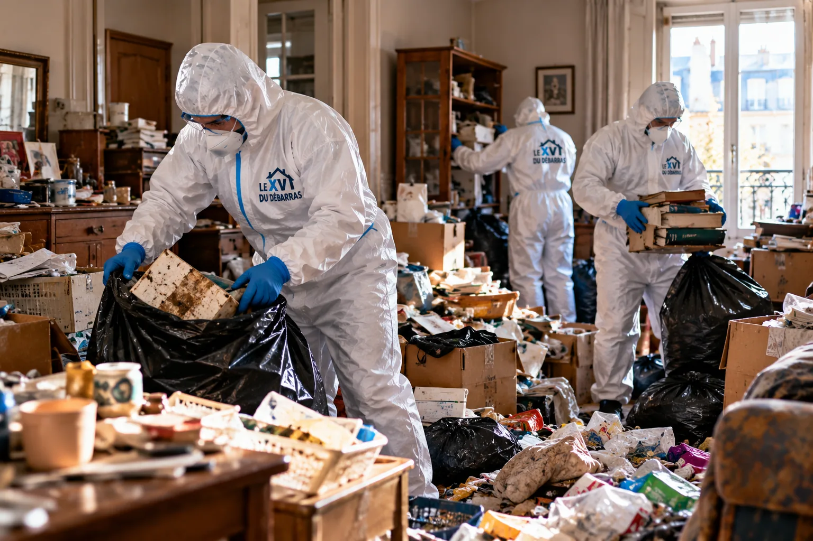
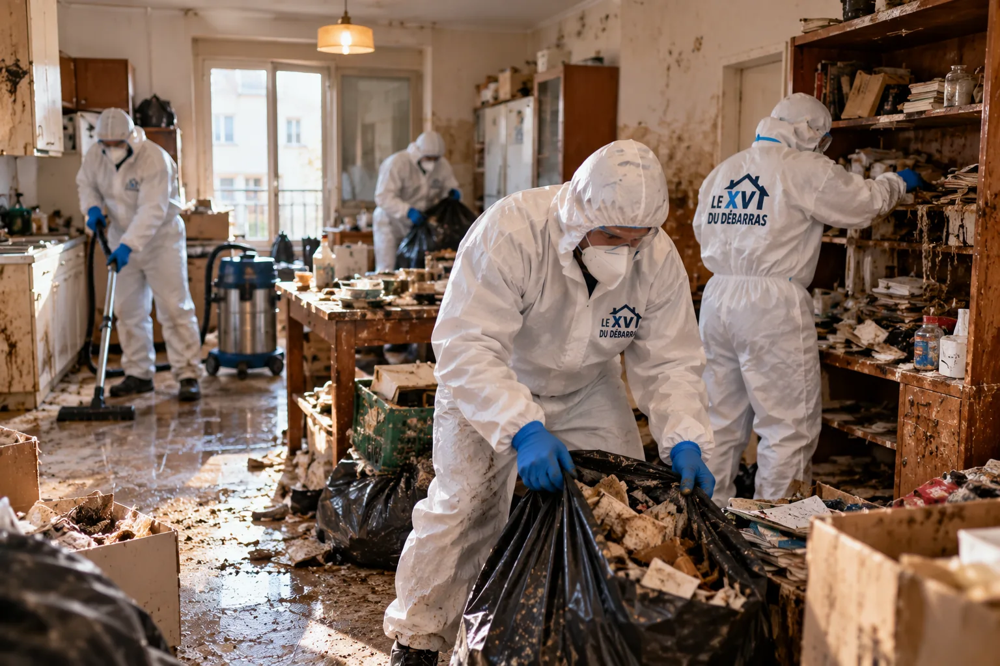
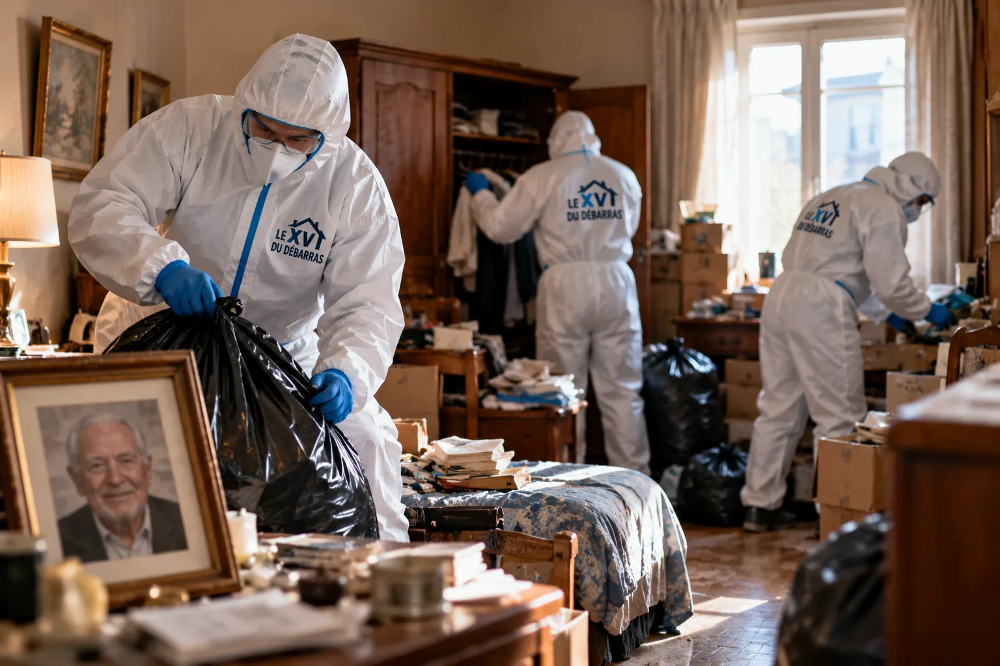
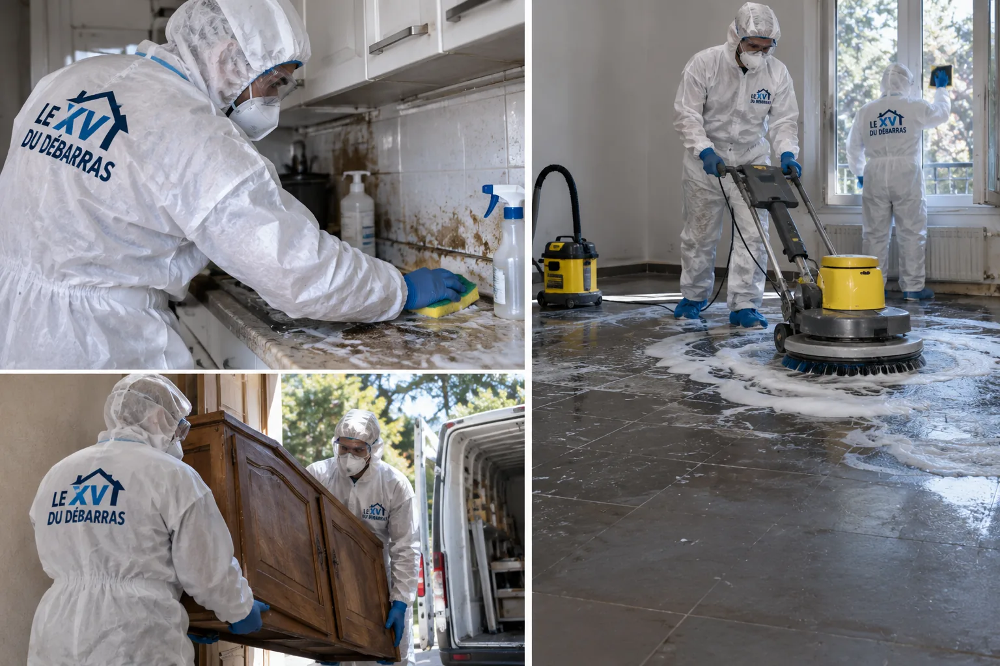

Nettoyage après décès à Emerainville (77)
Appartement, pavillon ou logement de résidence à Emerainville : un lieu à remettre en état après un décès, avec délicatesse et sans formalité inutile.
Quand un décès n’est découvert qu’après plusieurs jours, la famille ne devrait pas avoir à ouvrir la porte.
Nous prenons le relais, avec soin, et rendons un logement sain.

gratuitvisite et chiffrage
Une commune de Marne-la-Vallée entre activité et résidence
Emerainville compte environ 7 700 habitants. La commune réunit une grande zone d’activités, des résidences collectives, des lotissements pavillonnaires et un parc de loisirs voisin de la forêt.
Beaucoup d’habitants y vivent depuis les années de construction de la ville nouvelle, et certains vieillissent seuls dans leur appartement ou leur maison.
Quand un décès passe inaperçu, la mairie, un voisin ou un proche lointain nous appelle souvent le premier.
- Résidences
- Pavillons
- Personnes seules
Quatre cas que nous rencontrons ici
L’appartement de résidence
Troisième étage, ascenseur partagé, voisins proches.
Le pavillon de lotissement
Garage, jardin et pièces à l’étage.
Le logement d’un retraité isolé
Découvert après plusieurs jours, avec odeurs persistantes.
Le studio loué
Un bailleur ou une agence doit rendre le lieu propre.
Chaque situation a sa logistique, que nous précisons avant de chiffrer.
Voisinage actif
Autour de la zone d’activités, circulation et stationnement sont denses. Nous réservons un emplacement près de l’entrée pour limiter les allers-retours.
Ce que nous vous demandons
Uniquement l’adresse, l’étage, la personne qui détient les clés et le meilleur moment pour vous rappeler. Nous ne posons aucune question sur les circonstances du décès, et nous annonçons dès le début que la visite est gratuite.
Immeubles des années 80
Beaucoup d’immeubles datent de la construction de Marne-la-Vallée. Ascenseurs étroits et paliers courts imposent de porter à bras certaines charges.
Nettoyer ce que l’on ne devrait jamais voir
Un corps resté plusieurs jours laisse des fluides qui s’infiltrent dans le matelas, le parquet ou la dalle. Nous les absorbons, retirons les supports imprégnés puis lavons au détergent.
La désinfection vient ensuite, avec un temps de contact respecté.
Nous recommençons si un contrôle visuel ou olfactif laisse un doute.
- Retrait des supports
- Désinfection contrôlée

Proches venus de Paris
Le RER voisin permet à des proches de venir de loin. Nous fixons les rendez-vous à l’heure de leur arrivée.
Du matin au soir
L’équipe arrive à l’heure convenue, installe les protections au sol et dans l’entrée, puis travaille pièce par pièce. Un point est fait avec vous en fin de journée, et le logement est fermé à clé avant notre départ.
Une présence discrète
Nous prévenons si besoin le gardien, jamais pour donner des détails, seulement pour organiser les accès.
Traiter l’air autant que les surfaces
L’odeur d’un décès tardif s’accroche aux rideaux, aux plinthes et aux faux plafonds. Elle disparaît d’autant mieux que l’on retire sa source avant de traiter l’air.
Nous utilisons des procédés adaptés au volume du logement, puis aérons longuement avant de mesurer le résultat.
Qui peut autoriser
Si la personne décédée était sous tutelle, nous demandons un justificatif du représentant avant de commencer.
Un chantier à distance
Si vous habitez loin, tout peut se faire par téléphone et courriel : visite en visio, devis signé en ligne, clés remises à un voisin de confiance ou déposées chez le notaire. Vous recevez des photographies à chaque étape.
Plusieurs interlocuteurs
Quand plusieurs héritiers sont concernés, nous demandons qu’un seul nous donne les consignes, par écrit.
De votre appel à la remise des clés
Votre appel
Adresse, type de logement et nom de la personne habilitée ; nous ne vous demandons rien d’autre.
Autorisation
Nous commençons quand le logement est libéré et qu’un proche ou un notaire a donné son accord.
Visite
Nous observons les pièces, repérons les zones touchées et estimons la durée.
Chiffrage
Un devis écrit sépare nettoyage, évacuation, odeurs et tri.
Travail
Retrait des éléments souillés, lavage, désinfection puis traitement de l’air.
Clôture
Parcours final, souvenirs remis, attestation et photographies.
Retrouvez le détail sur la page méthode.
Coordonner la suite
Un logement nettoyé facilite l’inventaire et la mise en vente. Nous adaptons le calendrier à celui du notaire.
Se protéger sans s’alarmer
Un décès tardif expose à des bactéries et à des moisissures. Nous portons un équipement complet, travaillons sous aération et ne laissons personne entrer dans la zone traitée avant la fin de la désinfection.
Dossier à constituer
Selon le contrat, une part des frais peut être prise en charge. Nous fournissons devis, photos et facture pour l’assureur.
Rendre à la famille ce qui compte
Avant tout lavage, nous mettons de côté photographies, lettres, bijoux, médailles et petits objets. Ils sont nettoyés doucement, rangés dans une boîte et remis à la personne désignée.
Nous ne jetons rien qui puisse avoir une valeur affective sans son accord.
Un inventaire sommaire accompagne la boîte.
- Objets chers préservés
- Inventaire remis

Libérer le logement
Un bailleur social ou privé a besoin d’un logement sain. Nous rédigeons un rapport utile à son dossier.
Larves et mouches
Il arrive que des insectes se soient développés. Nous les éliminons mécaniquement, nettoyons les zones touchées puis signalons si un traitement complémentaire spécialisé est recommandé.
Démarches
Nous ne remplaçons pas les services de l’état civil, mais nous vous indiquons à qui vous adresser.
Sortir sans bruit ni regard
Matelas, tapis et textiles imprégnés sont enveloppés sur place, puis descendus par le chemin le moins visible.
Le camion n’affiche aucun nom et les sacs restent fermés jusqu’à leur destination.
Les déchets biologiques suivent une filière agréée, avec bordereau à l’appui.
- Sacs fermés
- Filière agréée

Retrait complet
Un matelas imprégné ne se récupère jamais. Il est enlevé entier, enveloppé et évacué.
La zone la plus exposée
Le lit, la table de chevet et le sol alentour concentrent l’essentiel des fluides. Nous démontons ce qui peut l’être, absorbons, évacuons les éléments imprégnés puis lavons le support jusqu’à la dalle si nécessaire.
Parquet ou carrelage
Un carrelage se désinfecte plus facilement qu’un parquet. Quand les fluides ont traversé, nous soulevons les lames concernées.
Ce qui détermine votre prix
Le prix dépend de l’état du logement et de ce qu’il faut enlever. Voici les critères.
Surface
Studio, appartement ou pavillon.
Délai écoulé
Plus le temps passe, plus l’imprégnation est profonde.
Supports touchés
Matelas, parquet, dalle, plinthes.
Odeurs
Besoin de traitements prolongés de l’air.
Accès
Étage, ascenseur, portage, stationnement.
Sortie des déchets
Volume à enlever et filière retenue.
Si le décès résulte d’un acte violent, voyez plutôt notre service scène de crime.
Traces et projections
Les murs proches du lit sont lavés, les plinthes déposées si besoin. Une peinture dégradée reste à refaire par un artisan.
Odeurs mêlées
Parfois, l’odeur du décès se mêle à celle du tabac ou de la cuisine ancienne. Nous traitons les trois ensemble en retirant d’abord les textiles puis en nettoyant plafonds, murs et joints.
Frigo et placards
Denrées périmées, réfrigérateur plein : nous vidons, nettoyons et désinfectons avant de rendre la pièce.
Un lieu rendu en paix
Nous parcourons le logement avec la personne habilitée, pièce après pièce, puis lui remettons les clés.
Les documents arrivent par courriel dès le soir.
Sanitaires
Les sanitaires sont nettoyés et détartrés. Nous traitons aussi les joints et les siphons.
Pudeur et retenue
Nos intervenants ne photographient jamais que ce qui est nécessaire au devis ou à la preuve du travail. Aucune image n’est diffusée en dehors du dossier remis à la famille et à l’assureur.
Ouvrir largement
Nous ouvrons portes et fenêtres dès que possible pour renouveler l’air, y compris par grand froid.
Textiles porteurs d’odeur
Textiles et tapis absorbent les odeurs. Selon leur état, nous les nettoyons ou les évacuons.
Mis à l’abri
Les papiers d’identité, courriers et documents bancaires sont rassemblés sans être lus, puis remis à la personne habilitée.
Presque rien
Une pièce d’identité de la personne qui commande, une preuve de son lien avec le défunt ou le mandat du notaire, et l’adresse du logement. Nous ne demandons pas de certificat de décès pour établir un devis.
Un point sensible
Si un animal est présent, nous demandons qu’un proche le prenne en charge avant le chantier.
Remise contre signature
Les clés sont confiées contre reçu et restituées de la même façon à la fin.
Formée, discrète
Nos intervenants connaissent ce travail. Ils parlent peu, restent respectueux et ne commentent rien.
Entretien et vigilance
Une fois le logement rendu, nous conseillons de l’aérer chaque jour pendant une semaine, de ne pas le chauffer fortement et de nous rappeler si une odeur réapparaît.
Équipement complet
Combinaison, gants, masque filtrant et bottes lavables sont portés à chaque intervention.
Dossier daté
Avant, pendant et après, les images sont prises avec date et heure, pour la famille et l’assureur.
Filière agréée
Les déchets biologiques sont emballés puis traités par un centre autorisé, bordereau à l’appui.
Simple et transparent
Un acompte peut être demandé pour un chantier long, le solde est dû à la remise des clés. Tout supplément éventuel est validé par écrit avant d’être réalisé.
Un à quatre jours
Un studio se traite en un jour ou deux, un pavillon peut demander quatre jours avec les temps de séchage.
Visite rapide
Pour un logement à rendre vite, nous pouvons visiter sous vingt-quatre heures.
Ligne par ligne
Nettoyage, désinfection, évacuation et odeurs sont séparés. Le tarif annoncé reste valable trente jours.
Se laisser du temps
Rien ne presse davantage que la sécurité du lieu. Si vous avez besoin de quelques jours avant de décider, nous gardons votre devis valable et restons joignables.
Après le chantier
Un défaut constaté dans la semaine est repris chez vous, sans facturation supplémentaire.
Autres métiers
Peinture, remplacement de sol ou de menuiserie relèvent d’artisans. Nous pouvons vous les indiquer.
Chaque soir
Un message vous résume l’avancement et la suite prévue.
Rien d’apparent
Véhicule neutre, tenue sobre, sacs fermés : la rue ne voit rien.
Pour les proches
Un deuil laisse des traces. Nous pouvons vous communiquer les coordonnées d’une association d’écoute si vous le souhaitez.
Chaud ou froid
En été, la chaleur accélère les odeurs et nous venons tôt ; en hiver, nous prévoyons plus de séchage.
Lumière du jour
Les vitres sont nettoyées en fin de chantier pour rendre au logement sa clarté.
Annexes
Cave et box de la résidence sont inspectés et chiffrés à part si nécessaire.
Courriers accumulés
Les courriers sont ramassés, rassemblés dans une pochette et remis sans avoir été lus.
Préparer la suite
Un logement propre et aéré se visite mieux et rassure l’acquéreur. Nous coordonnons avec l’agent.
Un mot juste
Nous évitons les formules toutes faites. Une écoute simple, un devis clair et des gestes sûrs suffisent.
Ne pas entrer seul
Il est déconseillé d’entrer seul dans un logement touché. Nous pouvons le faire avant vous, puis vous guider.
Appareils vidés
Four, lave-linge et lave-vaisselle sont vidés, nettoyés et laissés ouverts pour sécher.
Odeurs piégées
Derrière radiateurs et bas de meubles, l’odeur persiste. Nous les nettoyons au pinceau et à l’aspirateur filtré.
Anticiper les frais
Si les frais vous inquiètent, nous détaillons chaque poste afin que vous puissiez décider par étapes.
Vos remarques
Votre retour final nous permet d’ajuster nos gestes pour la prochaine famille.
Ne pas laisser durcir
Plus le nettoyage est repoussé, plus l’imprégnation gagne. Nous conseillons d’appeler dès la libération du lieu.
Éviter les questions
Nous laissons une affichette neutre « travaux en cours » sur la porte, sans autre précision.
Double emballage
Les déchets sont doublement ensachés et étiquetés, puis sortis par l’itinéraire le plus discret.
Nettoyage après décès dans les autres communes de Seine-et-Marne
Le XV du Nettoyage se déplace dans tout le département, avec la même méthode et le même devis écrit gratuit après visite. Retrouvez la page de votre commune :
Avon · Dammarie-les-Lys · Dammartin-en-Goële · Magny-le-Hongre · Meaux · Melun · Moissy-Cramayel · Montereau-Fault-Yonne · Montévrain · Savigny-le-Temple · Thorigny-sur-Marne · Toute la Seine-et-Marne
Après décès à Emerainville : vos questions
Quand pouvez-vous intervenir ?
Dès que le logement est rendu à la famille et qu’une personne habilitée nous donne son accord.
Faut-il être présent ?
Non. Une remise de clés contre signature suffit, mais vous pouvez venir si vous le souhaitez.
Que faites-vous des souvenirs ?
Photographies, courriers, bijoux et objets chers sont mis de côté et remis à la famille.
Pouvez-vous intervenir dans un appartement en étage ?
Oui. Nous organisons le portage et protégeons parties communes et ascenseur.
Les voisins sauront-ils ?
Nous n’utilisons ni marquage ni vêtement distinctif, et nous fermons les sacs avant de sortir.
Que recevrai-je à la fin ?
Une attestation, des photographies horodatées et une facture détaillée.
Votre devis gratuit à Emerainville, en toute discrétion
Indiquez le type de logement, l’étage, votre lien avec la personne et le moment pour vous joindre. Rien d’autre ne vous sera demandé.
07 57 83 26 26